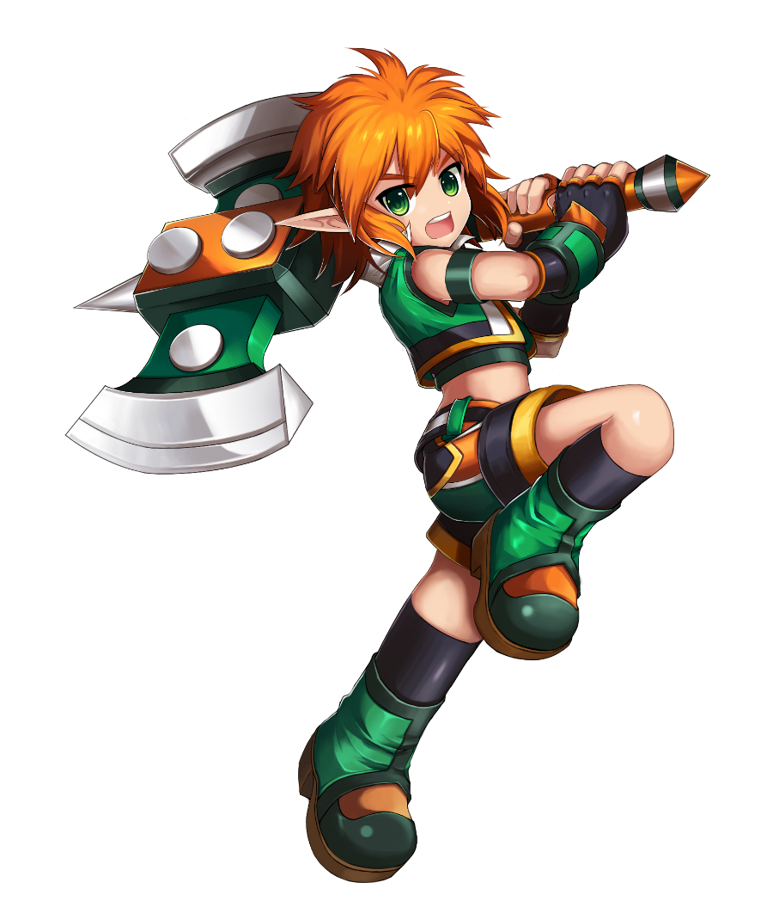
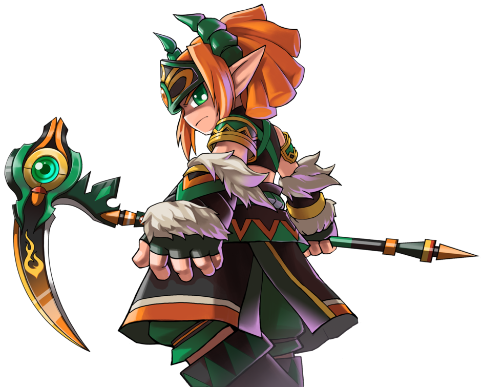
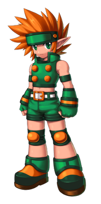
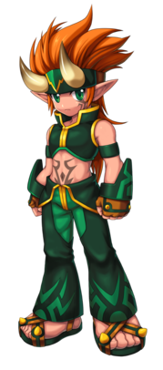
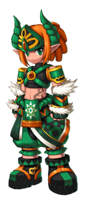
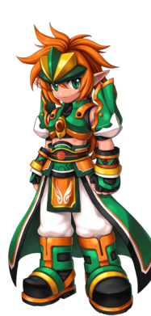
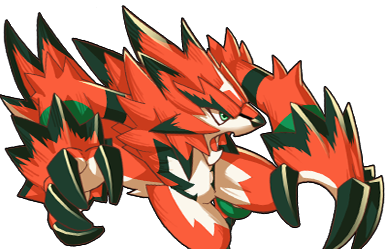
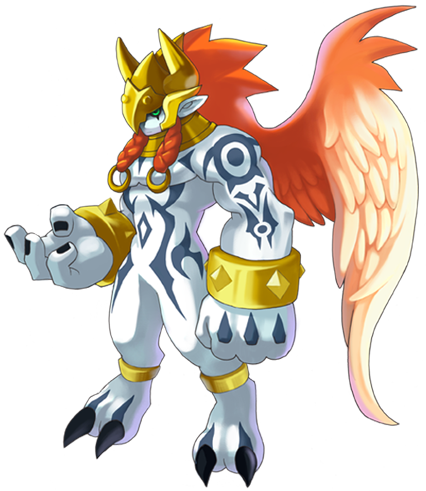
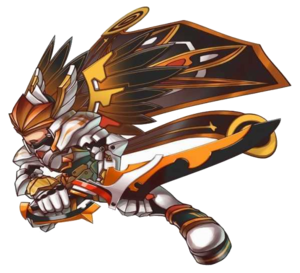

Informações Principais do Personagem
Nome: Ryan Woodguard
Idade: 16 anos
Origem: Floresta Élfica de Vermécia


Ryan é um elfo muito gentil que adora ajudar os outros, além de proteger a floresta e os
seres que nela habitam. Órfão, ele cresceu sozinho vivendo ao lado dos animais, até ser adotado
pelo druida Satyr, que o treinou na Ordem dos Druidas.
Com o ataque dos monstros de Cazeaje e a destruição de muitos locais sagrados para a Ordem dos
Druidas, Ryan acabou se unindo à Grand Chase para deter as forças do mal, quando foi salvo por
Elesis, Lire e Arme.
Classes

Druída
Arma: Machado

Sentinela
Arma: Lâmina Dupla

Xamã
Arma: Gadanha

Executor
Arma: Pique
Habilidade especial
Transformações
Vivendo sob as mãos da Mãe Natureza, Ryan recebeu a habilidade de se transformar. Ele recebeu
esta habilidade para poder punir todos os rivais da Natureza.
Como um Druida, Sentinela, Xamã, e o Executor, ele pode se transformar no Lobo. Esta besta usa
uma mordida perigosa e ataques que cortam para derrotar seus inimigos. Ele recebeu um ataque
buff, mas pelo preço da sua Defesa e Vitalidade. Além disso, ele pode espalhar um segundo buff
aos aliados próximos que dura 3 segundos e infinito envolta do lobo. Atualmente, o Lobo é a
única transformação do Ryan que pode ser agarrada. Porém, se o a transformação do Lobo passar
enquanto ele estiver sendo agarrado, o Ryan será libertado do agarrão.


O Nephirim é invocado pelo Sentinela, Xamã, e Executor. Esta perigosa criatura é o avatar da ira
da Natureza. Foi dado a ele um efeito de super armadura e buffs de vitalidade além de aumentar o
seu tamanho o fazendo imune a agarrões. Além disso existe uma aura protetora que empurra os
inimigos próximos, e também um ataque surpreendente em missões. Ele também pode compartilhar um
segundo buff de defesa que dura por 35 segundos. De fato, o Nephirim pode causar um dano em
massa nos seus inimigos.
Magnus é o herói legendário dos Druidas e dos seus líderes. Pela sua idade, ele teve que se
retirar e ser sucedido pelo Executor e que recebeu a sua força. Ao Magnus não foi dado nenhum
buff, mas ele tem 3 habilidades diferentes além de seu tamanho aumentado para se defender de
agarrões, e esta transformação não tem limite de tempo. Se controlado direito, ele pode ser um
ótimo lutador.
